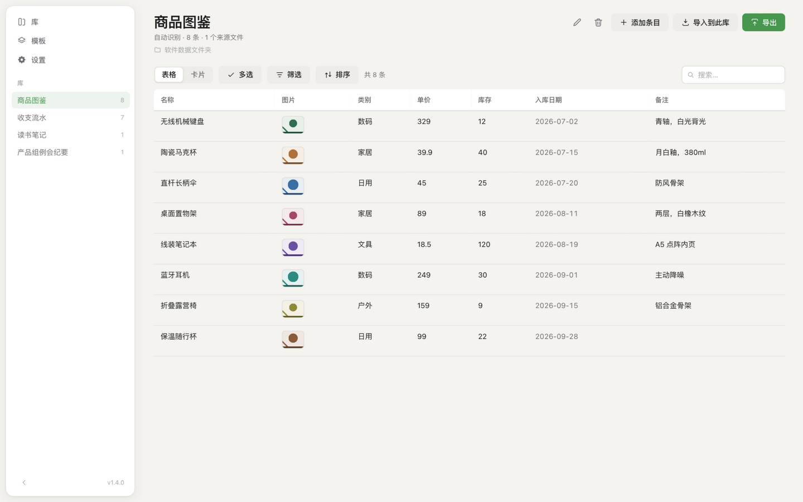
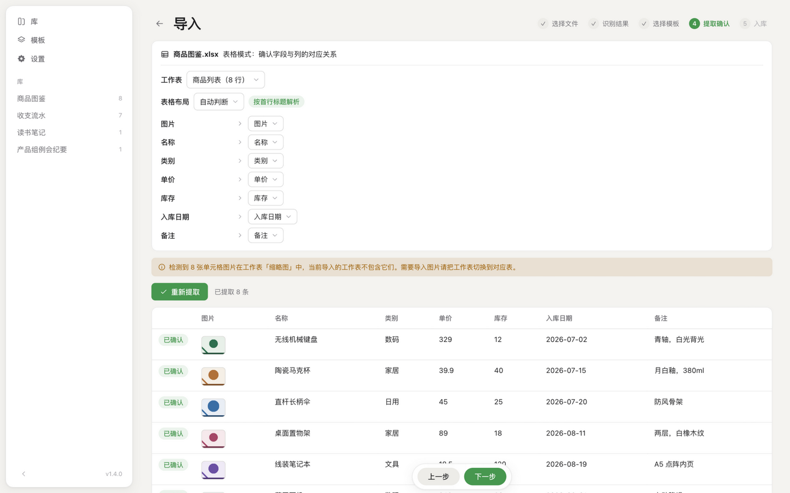
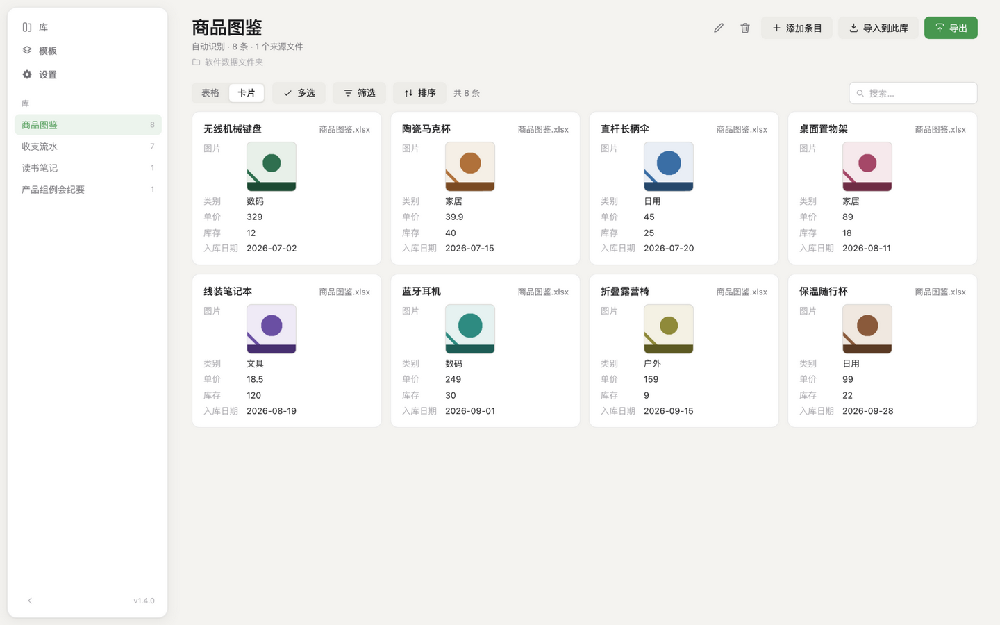
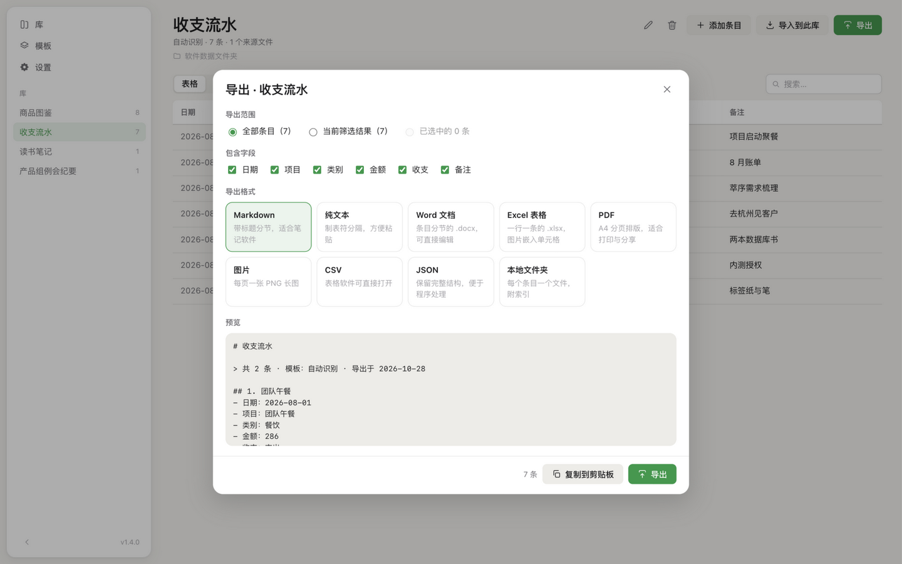
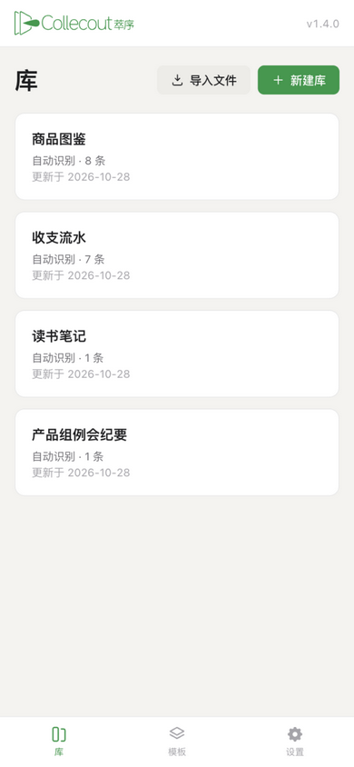

零散文档，萃成秩序。
萃序 Collecout 是一个本地优先、开源的信息提取与整理工具。 导入 Word、Excel 和纯文本，萃成结构化的信息库。




- 桌面端使用 Tauri 2 构建。支持 Windows、macOS 与 Linux，免安装便携版开箱即用。
- Android使用 Capacitor 7 构建，以 APK 安装；界面延伸到状态栏下方，底栏自动避让手势区。
- 本地存储每个库一个文件夹：library.json 存文本与配置，files/ 存源文件与图片副本。
- 界面明暗双主题，跟随系统或自选；四种字体预设加任意自定义字体，85%–130% 字号滑块。
